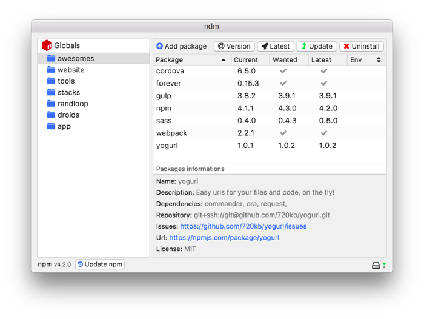

ndm
Github
Who
Star
Manage
npm
from the couch
The Electron GUI for managing npm, formally
npm desktop manager

Available Downloads
At the moment
ndm
is available only for Mac.
Download for
Windows
Download for
Mac
Download for
Linux
Contribute
Support this project
Star
Fork
Follow @720kb_